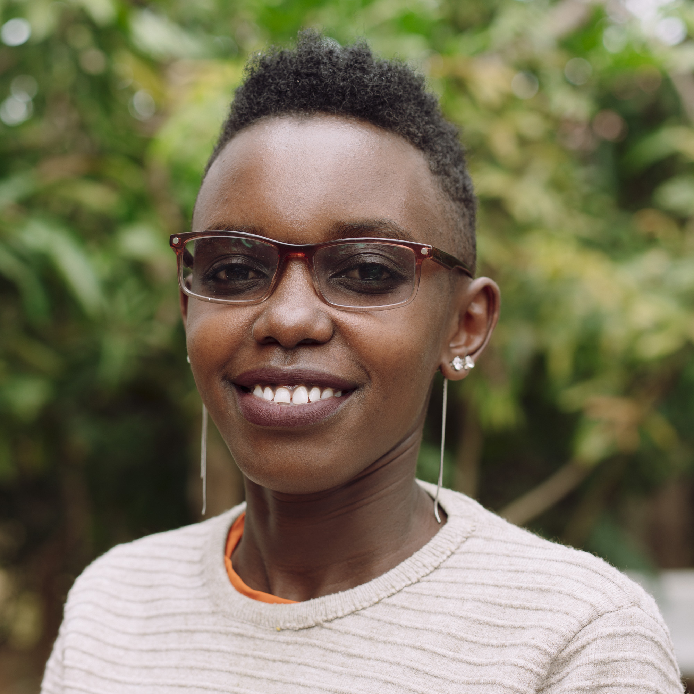
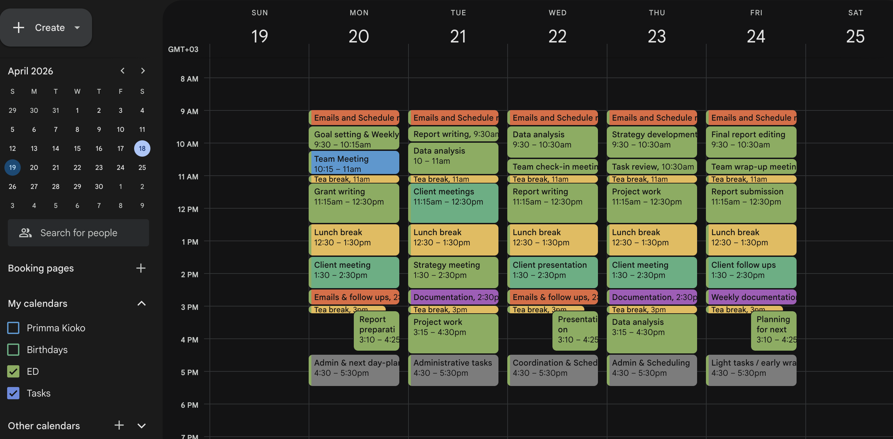
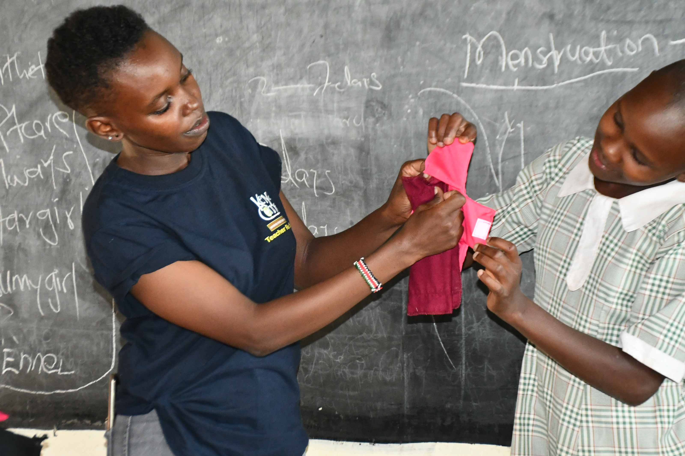
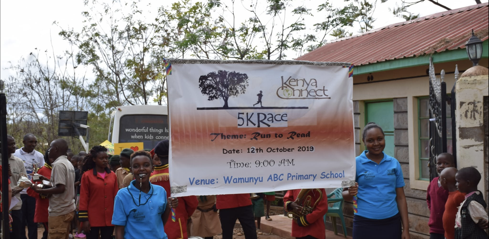
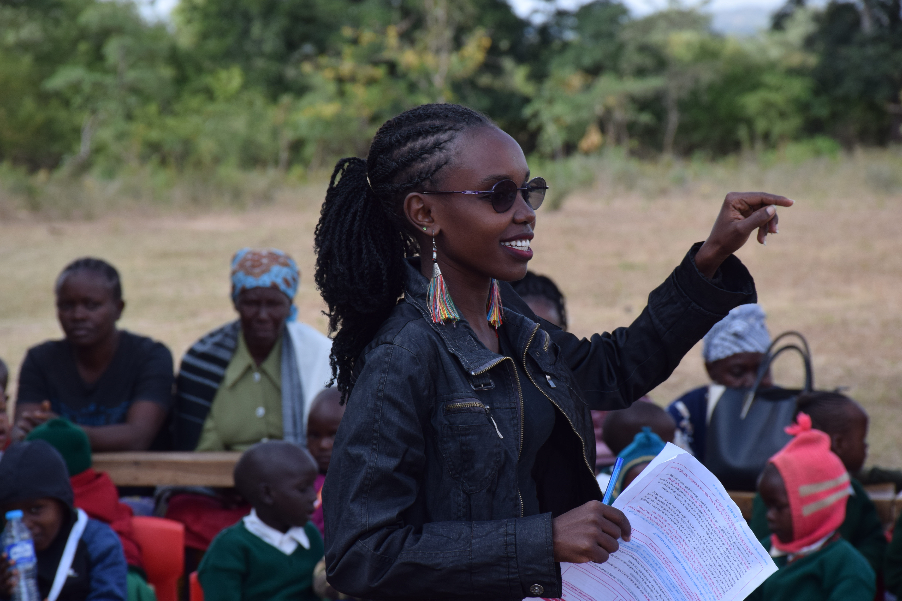
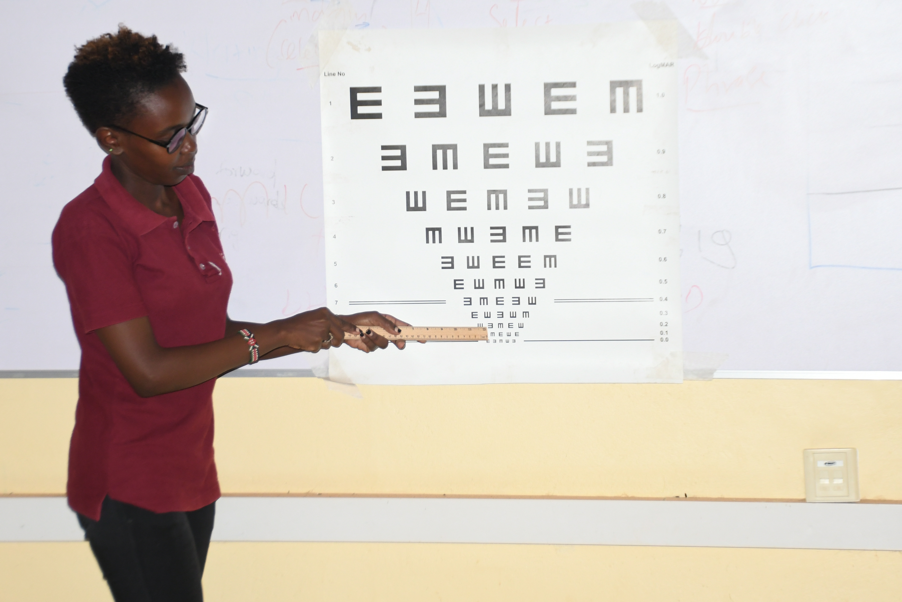
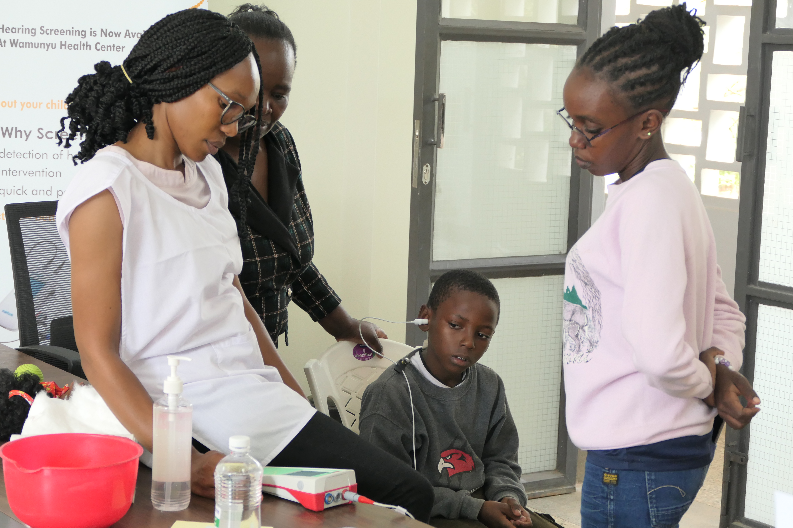
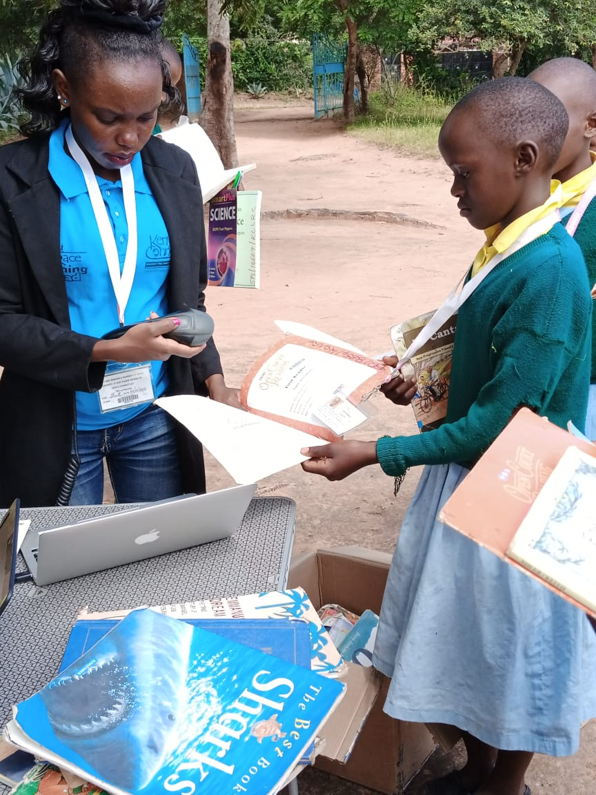

Executive &
Administrative Support
- Administrative operations
- Documentation
- Reporting
- Follow-up
EXECUTIVE ASSISTANT / KENYA
Executive Assistant | Administrative Support Specialist
Organized, detail-oriented, and dependable administrative professional with experience supporting operations, leading programs, coordinating stakeholders, managing information, and keeping projects moving from planning to completion.

Profile photo01 / About
A professional biography will go here.
Add your story, professional background, working style, and the kind of teams or organizations you support. This space is intentionally left open for your own words.
Editable biography placeholder02 / Expertise
03 / Selected work
Explore a foundation for documenting the programs, initiatives, and coordination work that matter most.

CalendarA collection of practical work samples demonstrating calendar management, email organisation, travel planning, documentation, and day-to-day administrative support.

WingsPoaDonor-funded menstrual health program providing reusable sanitary products and menstrual health education to schoolgirls.

Running to ReadAnnual community fundraising initiative combining running, literacy, community participation, and resource mobilization to support children’s reading and learning.

Peep AntenatalFacilitating curriculum-based group sessions for expectant parents, supporting early parent-baby connection, learning, engagement, documentation, and program reporting in partnership with Wamunyu Level 3 Hospital.

Eye ScreeningCommunity eye health initiative providing screening services to help identify people who may require further assessment or support.

Hearing ScreeningCommunity-based hearing screening initiative focused on screening children who may require further hearing assessment or support.

LiteracyThis project highlights previous experience supporting literacy, mobile library, inventory management, book access, and digital learning activities.
Executive Assistant / Professional work samples
Practical work samples
This collection of work samples demonstrates practical skills in providing organised, reliable administrative and executive support. The examples highlight calendar management, email organisation, travel planning, documentation, coordination, and attention to detail.
Demonstrates the ability to structure a working schedule, organise tasks and priorities, manage meetings and dedicated work blocks, and maintain a clear overview of daily and weekly activities.
Demonstrates an organised approach to email and inbox management using labels and categories to separate important areas of work.
A detailed travel planning work sample demonstrating the ability to organise travel information into a clear and professional document.
Literacy / Previous program experience
Literacy Programs | Digital Learning | Inventory Management | Program Support
I supported literacy and digital learning initiatives designed to make books and technology-based learning more accessible to children, including children in rural and hard-to-reach areas.
This was work I did previously and is presented as previous program experience, not a current role or current program.
The book check-in and check-out process was initially manual. The program transitioned to an online system, improving the way book movement and check-in/check-out information could be recorded and tracked.
Children in rural and hard-to-reach areas were able to access books through the mobile library approach.
I taught children introductory coding using Scratch, helping them develop early digital skills through hands-on learning.
I supported the transition to digital record keeping, maintained inventory information, coordinated the movement of books through the mobile library approach, and documented supplies received and shipped.
PEEP ANTENATAL PROGRAMME
Current / Ongoing Program
The Peep Antenatal Program supports expectant parents through group-based learning and activities focused on early parent-baby connection, interaction, and development.
This is the second year of the program, delivered through group sessions in partnership with Wamunyu Level 3 Hospital.
The program has engaged over 20 families.
The sessions provide an opportunity for expectant parents to learn, reflect, participate in activities, and think about how they can begin building a connection with their baby before birth.
Program Facilitator and Coordinator
One area of learning during the sessions has been helping expectant parents recognize that connection with their baby can begin before birth.
Some parents had not previously considered that they could talk and sing to their unborn babies. Through discussions and program activities, parents are introduced to simple ways of thinking about, interacting with, and building an early connection with their baby during pregnancy.
The program is implemented through coordination and partnership with Wamunyu Level 3 Hospital, supporting the planning and delivery of group sessions for expectant parents.
Eye Screening / Detailed project view
Health Program Coordination | Partnership Management | Community Engagement
A community eye health initiative that provides eye screening services to help identify people who may require further assessment or support.
Program Lead / Program Coordinator
The program required coordination between community participants, screening partners, and other stakeholders to ensure activities were properly planned and implemented.
I coordinated communication, scheduling, participant engagement, logistics, documentation, and reporting to support a smooth screening process.
Hearing Screening / Detailed project view
Health Program Coordination | Partnership Management | Community Engagement
A community-based hearing screening initiative focused on screening children and helping identify those who may require further hearing assessment or support.
Program Lead / Program Coordinator
The program involved coordinating schools, health stakeholders, screening partners, and participating children.
I managed communication, scheduling, participant coordination, logistics, documentation, and reporting to support the implementation of the screening activities.
Running to Read / Detailed project view
Event Leadership | Budgeting | Sponsorship | Marketing | Logistics
Running to Read is an annual community running event that supports children’s reading and education.
Race Committee Lead / Event Coordinator
The event involves coordinating many moving parts, including the race committee, schools, sponsors, partners, participants, marketing activities, event logistics, and finances.
I lead the planning process by organizing activities, coordinating communication, following up with stakeholders, supporting sponsorship outreach, managing promotional activities, tracking the budget, and ensuring that preparations are completed before the event.
After the event, I support financial reconciliation and documentation.
Confirmed results will be added here.
[ADD CONFIRMED RESULT]
WingsPoa / Detailed project view
Program Leadership | Coordination | Administration | Reporting
WingsPoa is a donor-funded menstrual health program that provides reusable sanitary products and menstrual health education to schoolgirls.
Program Lead / Program Coordinator
The program involves coordinating multiple stages from planning through follow-up. I manage the flow of activities by coordinating budgets and procurement, working with LitMoms on product production, communicating with schools and parents, organizing surveys, planning training and distribution activities, documenting implementation, and tracking information needed for reporting.
Because the program is donor-funded, documentation is an important part of the work. Activities are documented through photographs, videos, program records, and reports to support accountability and demonstrate implementation.
Program figures / latest reported figures
04 / Experience
Include role titles, organizations, dates, responsibilities, and selected outcomes when you are ready.
06 / Contact
For administrative support, program coordination, and remote collaboration opportunities, get in touch.